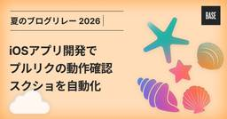
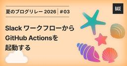
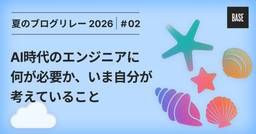

BASEプロダクトチームブログ
https://devblog.thebase.in/
ネットショップ作成サービス「BASE ( https://thebase.in )」、ショッピングアプリ「BASE ( https://thebase.in/sp )」のプロダクトチームによるブログです。
フィード

フィーチャートグルをもっとEasyに使おう
BASEプロダクトチームブログ
はじめに この記事は、BASEテックブログ夏のブログリレー9日目の記事です。 こんにちは、BASE株式会社で PHPer をしている @meihei です。 フィーチャートグルはご存知で既に使っている、という方も多いと思います。BASEでもフィーチャートグルの仕組みを利用しています。 一方で、私が進めていたプロジェクトでは、既存の仕組みだけでは少し扱いづらい場面がありました。そこで、用途に応じて必要最低限のフィーチャートグルを追加していきました。 この記事では、フィーチャートグルを具体的にもっとEasyに取り入れていった事例を紹介します。 背景 フィーチャートグルとは フィーチャートグルは、コ…
7時間前

「主要SLO」を半年運用して、得られた手応えと見直していること
BASEプロダクトチームブログ
はじめに この記事は、BASEテックブログ夏のブログリレー8日目の記事です。 こんにちは！wakanaです。 私はBASE株式会社でバックエンドエンジニアをしながらBASE事業部内のサービスレベル活動推進をしています。 BASEのサービスレベル活動では、「SLOを全社の共通言語にする」ことを目標に掲げています。その取り組みの一つとして、今年から「主要SLO」の運用を始めました。 運用開始から半年が経ち、主要な機能のサービス品質を広く可視化し、事業部全体で品質を振り返る文化も定着しつつあります。一方、実際に運用したことで、次に取り組むべき課題も具体的に見えてきました。 この記事では、主要SLOの…
1日前

脅威モデリングはじめました 1
1
BASEプロダクトチームブログ
はじめに この記事は、BASEテックブログ夏祭り7日目の記事です。 BASE Dept Order SectionでエンジニアをしているCapi(かぴ)です。 本記事では有志でチームを組んで進めているBASEのWebアプリケーションセキュリティ施策の一環で脅威モデリングを行ったのでそのご紹介です。脅威モデリングに興味のある方の参考になれば嬉しいです。 最初にこの記事で伝えたいこと3つを事前に共有しておきます。 目的をもって脅威モデリングを導入する 小さく始めて継続することを意識する 脅威モデリングに時間はかかったが、得るものは多かった 脅威モデリング実施の背景 過去のインシデント履歴 BASE…
2日前

会社のはてなブログ運用をHatenaBlog WorkflowsとAIで効率化する
BASEプロダクトチームブログ
この記事は、BASE夏のブログリレー6日目の記事です。 こんにちは、テックブログ編集委員の松原（@simezi9）です。 BASE Tech Blog は、はてなブログで運用しています。 昨今ではブログを企業が運営すること自体の価値を改めて問われているようにも思いますが、BASEという会社の活動を世の中に発信していきたいという思いで引き続き活動を続けています。 そんなBASEのテックブログも、運用開始から10年が過ぎました。 その間、編集部員も入れ替わり運営のルールも様々に形を変えてきたわけですが、 ここにきて記事の執筆の仕組みに大きくテコ入れをして、AI時代準拠にアップデートをしました。 本…
3日前

SentryアラートをAIで自動調査するSlack Botを作った話
BASEプロダクトチームブログ
はじめに この記事は、BASE夏のブログリレー5日目の記事です。 こんにちは、BASE でバックエンドエンジニアをしている大塚です。 いきなりですが、エラーログアラート、通知チャンネルには流れてくるものの、日々の開発に追われて誰もすぐには見に行けない——そんな経験はないでしょうか？ アラートに気づいた人がログを見にいき、該当コードを grep して……という初動調査は、慣れていても 30 分から 1 時間かかる作業です。 BASE ではエラーや例外を Sentry に集約しているのですが、この初動調査を AI エージェントに任せる Slack Bot「sentry-analyzer」を内製して…
4日前

iOSアプリ開発で プルリクの動作確認 スクショを自動化
1
BASEプロダクトチームブログ
この記事は、BASEテックブログ夏のブログリレー4日目の記事です。 BASE株式会社で PAY IDアプリのiOSアプリエンジニアをしているkakkkiです。 最近、コーディングエージェントの進化によって開発のスピードが上がり、プルリクエスト（以下、プルリク）の数も大きく増えました。弊社のiOSアプリチームでも、git worktreeを活用して複数の開発を並行して進める場面が増えています。 開発が速くなるのはうれしい一方で、次のような課題も目立つようになってきました。 開発のたびに必要なシミュレーターや実機での動作確認の手間をどう減らすか 増えていくプルリクのレビュワーやデザイナーのUI確認…
5日前

Slack ワークフローから GitHub Actions を起動する 1
BASEプロダクトチームブログ
この記事は、BASE PRODUCT TEAM 夏のブログリレー2026 の3日目の記事です。 はじめに PAY ID Dept & Data Strategy Group で検索やレコメンドまわりを担当している持田です。 私たちのチームでは、大きなキャンペーンが実施されるたびに、検索やレコメンドといった API のスケールアウト・スケールインの設定を事前に入れる作業を手動で行っていました。PAY ID では月に何度かキャンペーンが行われることもあり、この設定作業が地味に手間でした。 社内にはキャンペーンの告知を流す Slack チャンネルがあり、告知は Slack ワークフローで投稿されてい…
6日前

AI時代のエンジニアに何が必要か、いま自分が考えていること
BASEプロダクトチームブログ
はじめに BASEのProduct DivisionでエンジニアをしているKondoと申します。 この記事は、BASE夏のブログリレー2日目の記事です。 生成AIの進化を実感しながら、これからエンジニアとしてどう生き残っていけば良いのだろうと考えることが増えました。ここでいう「生き残る」とは、AIに代替されることなく、変化の中でもチームやプロジェクトに必要とされ続けることです。生成AIでコードが書ける前提になり、「コードが書ける」こと自体が強みになりにくい場面が増えたと感じています。また技術的な調査やドキュメントを書くスキルも、AIに頼めば質の良いものがすぐに出てくるようになり、スキルの差別化…
7日前

問い合わせ調査AIエージェントcs_a導入の苦難とこれから
BASEプロダクトチームブログ
この記事は、BASE夏のブログリレー1日目の記事です。 こんにちは。BASE ProductDiv ItemSection の Torata です。 直近半年で私が作った問い合わせ調査AIエージェントの取り組みを紹介しようと思います。技術的にはそこまで難しいことをしていないので、技術構成の話ではなく、導入にあたってぶつかった壁とそれをどう乗り越えたかを中心に書いていきます。 前提:BASEの問い合わせ対応の流れ 前提としてBASEの問い合わせがどのような流れで、私が作成したAIエージェントがどのフェーズにフォーカスしたものかを説明します。 BASEではショップオーナーや購入者（以下、あわせてユ…
8日前
🍉 BASE PRODUCT TEAM 夏のブログリレー2026 🍉
BASEプロダクトチームブログ
こんにちは！BASE PRODUCT TEAM BLOG 編集部です。 お盆が過ぎてもまだまだ夏真っ盛りという今日この頃ですが、みなさまいかがお過ごしでしょうか。突然ですが、このたび「夏のブログリレー2026」と題して、ブログ記事の集中公開イベントを開催します！ この記事では、その概要と見どころをご紹介します。 夏のブログリレーとは BASE では、これまで年の瀬のアドベントカレンダーを8年続けて開催してきました。 devblog.thebase.in 一方で、それ以外では集中連載企画といったようなものはあまり実施してこなかったこともまた事実です。 日々のプロダクト開発・運用の中では、1年を通…
9日前
PHPカンファレンス2026 リジェクトコン&アフターイベントを共同開催&2名登壇しました
BASEプロダクトチームブログ
はじめに こんにちは、バックエンドエンジニアのかがの（@ykagano）です。 2026/8/6（木）に「PHPカンファレンス2026 リジェクトコン&アフターイベント」を共同開催しました。 本記事では、当日の登壇内容や会場の様子についてお届けします！ イベント概要 2026/7/20に開催されたPHPカンファレンス2026のスポンサー3社（株式会社コドモン、BASE株式会社、株式会社クイック）による共同開催で、会場は株式会社コドモンさまのオフィスをお借りしました。 codmon.connpass.com BASEからの登壇 カートの信頼性を担保するWireMockを使ったe2eテスト（かがの…
20日前
PHPカンファレンス2026 リジェクトコン&アフターイベントを3社共同開催！BASEから2名が登壇します
BASEプロダクトチームブログ
こんにちは、バックエンドエンジニアのかがの（@ykagano）です。 BASEは2026年8月6日(木)に株式会社コドモン、株式会社クイックと共同で「PHPカンファレンス2026 リジェクトコン&アフターイベント」を開催します。 PHPカンファレンス2026 リジェクトコン&アフターイベントについて 2026年7月20日(月・祝)に開催されたPHPカンファレンス2026のスポンサーである、コドモン・BASE・クイックの3社合同で、リジェクトコン&アフターイベントを開催します。 リジェクトコンとはプロポーザルを提出したものの、惜しくも採択されなかったトークを発表するイベントです。 そのため、登壇…
1ヶ月前
変わり続けるAI時代に備えて、New RelicのTerraform管理を再設計した話
BASEプロダクトチームブログ
はじめに こんにちは、BASE株式会社で PHPer をしている @meihei です。 直近で New Relic の Terraform 管理を改修し、AI を使いながら New Relic を利用しやすい環境を整えました。設計思想や具体的な取り組みなどをお話します。 背景 一度アーカイブされた Terraform 管理 BASE では以前から New Relic を導入しており、BASE BANK では New Relic を Terraform で管理する取り組みもありました。 devblog.thebase.in ただし、この取り組みで使っていたリポジトリは、現在アーカイブされていま…
1ヶ月前
PHP Conference Japan 2026 にBASEのエンジニアが登壇＆ゴールドスポンサーとして協賛しました！
BASEプロダクトチームブログ
はじめに 2026/7/20（月・祝）、BASE株式会社から登壇 & ゴールドスポンサーとして協賛したPHP Conference Japan 2026が開催されました。 今回はPHP Conferenceに初参加したメンバーが多かったため、初参加ならではの感想コメント、会場やスポンサーブースの様子についてお届けします！ BASEのスポンサーブースの紹介 今年は Yell Bank と PAY ID がロゴをリニューアルしたため、それにちなんで「BASEロゴ検定〜あなたもBASEのGEEKになろう〜」と題して、BASEが展開するサービスのロゴにまつわるクイズ企画を実施しました！ ↑ブログ投稿用…
1ヶ月前
PHP Conference Japan 2026 にBASEがゴールドスポンサーとして協賛します！
BASEプロダクトチームブログ
こんにちは、バックエンドエンジニアのかがの（@ykagano）です。 BASEは2026年7月20日(月・祝)に開催されるPHP Conference Japan 2026に今年もゴールドスポンサーとして協賛します。 PHP Conference Japan 2026について PHP Conference Japanは、PHPエンジニアのためのカンファレンスとして毎年開催されている日本最大級のPHPカンファレンスです。 今年は7月20日(月・祝)に大田区産業プラザPiOで開催されます。 phpcon.php.gr.jp 昨年の様子はこちらをご覧ください！ devblog.thebase.in …
2ヶ月前
AWS Summit Japan 2026 の New Relic ブースで BASE の SLO の取り組みについて登壇してきました!
BASEプロダクトチームブログ
はじめに こんにちは! BASE株式会社でバックエンドエンジニアをしている若菜(__wakanaction__)です。 2026年6月25日に幕張メッセで開催された AWS Summit Japan 2026 にて、New Relic ブースのミニシアターで「SLOをサービス品質の共通言語にするために取り組んできたこと」というテーマで登壇してきました。 本記事では、発表の概要にくわえて、当日お伝えしきれなかったことの補足をお届けします。 登壇の概要 本発表は、私と同僚の小笠原の2名で内容を作成しました。 発表資料はこちらです。 speakerdeck.com 発表でお伝えした内容は、大きく2つ…
2ヶ月前
どのショップでもいつでも購入できるカート機能を目指してRateLimiterを導入した話
BASEプロダクトチームブログ
はじめに こんにちは、バックエンドエンジニアの小笠原（@yukineko_819）です。 Checkout Reliabilityチームに所属し、負荷試験環境の構築や購入ロジックの最適化など、購入体験の信頼性向上に向けた取り組みをしています。 今回は、「どのショップでも、いつでも安定して購入できる」という購入体験を守るために、購入時のクレジットカード決済へ流量制御（以降、レートリミッタ）を導入した話をご紹介したいと思います。とくに、特定のショップに購入が集中しても、ほかのショップでは決済ができる状態にする ために、アクセス集中の影響をできる限り抑え、全体の購入可用性を平準化する設計をどう考えた…
2ヶ月前
社内にHTMLをホストする環境を作ったら社内情報の流れが変わった
BASEプロダクトチームブログ
CTO の川口(id:dmnlk)です。 最近、社内で「とりあえず HTML にして置いておくね」という会話を当たり前のように耳にするようになりました。きっかけは、社内 HTML をホストするだけのささやかな環境をひとつ用意したことです。たったそれだけのことなのに、気づけばエンジニア以外のメンバーまで使い始め、社内の情報の流れそのものが変わっていきました。 この記事では、なぜそんな環境を作ったのか、どう作ったのか、そして実際に何が変わったのかを書きます。 きっかけ：AI が生むドキュメントは「流通するが、読まれない」 AI コーディングが日常になって、社内には実装計画 (plan) や設計メモ…
3ヶ月前
「ルールを押し付けない」ガバナンスをエンジニアリングする。Product Governanceの裏側
BASEプロダクトチームブログ
はじめに こんにちは、BASE株式会社 Product Governance（通称：プロガバ）チームの緒方です。 突然ですが、皆さんは「IT統制」や「ガバナンス」と聞いてどんなイメージを持ちますか？ 「開発スピードが落ちそう」「お堅い事務作業」……そんな風に思われがちなこの領域ですが、我々は少し違います。 今回は、私たちがどのような思いで「守り」を「攻め」に変える仕組み作りをしているのか、その裏側をお話しします。転職を考えている方も、そうでない方も、新しいキャリアの形としてご一読いただければ幸いです。 3年半で激変した、BASEのIT統制を取り巻く環境 前回、IT統制についてのブログを投稿させ…
3ヶ月前
TSKaigi 2026にブロンズスポンサーとして協賛します
BASEプロダクトチームブログ
はじめに こんにちは！Pay ID Engineering Sectionの岡部（@rerenote）です。 今回はBASEがブロンズスポンサーとして協賛しているカンファレンス、TSKaigi 2026 のご紹介となります。 2026.tskaigi.org TSKaigi 2026 概要 私たちは、誰かの発表を聞くだけでなく、他の誰かに向けて発表することもまた学びの一つだと考えています。 参加者、登壇者、スタッフ、スポンサーをはじめ、TSKaigi に関わるすべての人たちが互いに学び合い、新たな繋がりを生み出し、型にとらわれないエンジニアとして生き生きと活躍できる世界を目指します。 TSKa…
4ヶ月前
継続的な負荷テスト環境をBASEに構築しました 〜 第3回: モックツールの構築と運用
BASEプロダクトチームブログ
はじめに こんにちは、Checkout Reliabilityチームでバックエンドエンジニアをしているかがの（@ykagano）です！ こちらは、「継続的な負荷テスト環境をBASEに構築しました」の第3回の記事です。 先に第1回、第2回を読んでいただくのをおすすめします。 継続的な負荷テスト環境をBASEに構築しました 〜 第1回: 負荷テストの全体像 - BASEプロダクトチームブログ 継続的な負荷テスト環境をBASEに構築しました 〜 第2回: 負荷生成ツールの構築と運用 - BASEプロダクトチームブログ こちらは第1回から紹介しているBASEの負荷テスト環境の構成図です。 負荷テスト環…
4ヶ月前
PHPカンファレンス小田原2026のブース企画でスタンプラリーをやりました
BASEプロダクトチームブログ
はじめに こんにちは、Checkout Reliabilityチームでバックエンドエンジニアをしているかがの（@ykagano）です！ 2026/4/11（土）に開催されたPHPカンファレンス小田原2026にブース出店し、今年は「UMECO周辺のBASEショップを巡ろう！ 小田原ショップスタンプラリー」と題した企画を実施しました。 こちらの特設サイトからスタンプラリーをすることができます（5/11までの限定公開）。 odawara2026.thebase.in 当日のスタート地点となっていたUMECOのスタンプ獲得画像です。 UMECOでのスタンプ獲得 BASEをご利用のショップオーナーにご協…
4ヶ月前
PHPカンファレンス小田原2026にBASEのエンジニアが登壇＆竹スポンサーとして協賛しました
BASEプロダクトチームブログ
はじめに 2026/4/11（土）、BASE株式会社も竹スポンサーとして協賛したPHPカンファレンス小田原2026が開催されました。今回は参加メンバーのコメント、会場やスポンサーブースの様子についてお届けします！ PHPカンファレンス小田原2026 概要 PHPカンファレンス小田原は「小田原の地でつながる、気張らないカンファレンス」をスローガンに、参加したエンジニアが新たな知識を共有し合い、互いに学び、成長できる場所をつくれるイベントです。 phpcon-odawara.jp スポンサーブース 今年はBASEらしさと小田原らしさの両方を感じてもらえる企画にしたいという思いから、「UMECO周辺…
4ヶ月前
継続的な負荷テスト環境をBASEに構築しました 〜 第2回: 負荷生成ツールの構築と運用
BASEプロダクトチームブログ
はじめに こんにちは、Checkout Reliabilityチームでバックエンドエンジニアをしているかがの（@ykagano）です！ こちらは、「継続的な負荷テスト環境をBASEに構築しました」の第2回の記事です。 先に第1回を読んでいただくのをおすすめします。 継続的な負荷テスト環境をBASEに構築しました 〜 第1回: 負荷テストの全体像 - BASEプロダクトチームブログ こちらは第1回で紹介したBASEの負荷テスト環境の構成図です。 負荷テスト環境の構成図 本記事では、負荷テストツールとして採用したLocustの選定理由から、実際の構築・運用方法までを紹介します。 負荷生成ツールの選…
4ヶ月前
継続的な負荷テスト環境をBASEに構築しました 〜 第1回: 負荷テストの全体像
BASEプロダクトチームブログ
はじめに こんにちは、Checkout Reliabilityチームでバックエンドエンジニアをしているかがの（@ykagano）です！ Checkout Reliabilityチームはカートの信頼性を向上させるためのチームです。 今回、BASEのカート機能を安定的に提供するために、継続的な負荷テスト環境を構築しましたので第1回として、本記事では全体像を紹介します。 全3回の記事を予定していますので、よろしくお願いします。 BASEの負荷テスト BASEではこれまで負荷テストは必要に応じて都度実施していました。 k6 というオープンソースソフトウェア（以降OSS）の負荷テストツールを使って、BA…
5ヶ月前
PHPカンファレンス小田原2026 に竹スポンサーとして協賛します
BASEプロダクトチームブログ
はじめに こんにちは！Pay ID Engineering Sectionの岡部（@rerenote）です。 今回はBASEが竹スポンサーとして協賛しているカンファレンス、PHPカンファレンス小田原2026 のご紹介となります。 phpcon-odawara.jp PHPカンファレンス小田原2026 概要 PHPカンファレンス小田原は「小田原の地でつながる、気張らないカンファレンス」をスローガンに、参加したエンジニアが新たな知識を共有し合い、互いに学び、成長できる場所をつくれるイベントです。 2026/4/11（土）、おだわら市民交流センター「UMECO」で開催されます。 昨年の模様はこちらの…
5ヶ月前
New Relic Advance: Tokyo参加レポート
BASEプロダクトチームブログ
はじめに Architecture Design Grp で エンジニア をしている大塚です。 New Relic Advance: Tokyoというイベントに参加してきました。 New Relicのこれからについて、さまざまな発表がありましたので、簡単にまとめさせていただきました。 今回はCEOなどの登壇もあり、見応えのあるイベントでした！ TL;DR New Relicが日本リージョン（国内データセンター）を追加予定で、データ保管要件とレイテンシ面でメリット 生成AI（Analyzer + MCPなど）でアラート調査の初動を短縮し、運用定着を加速する事例が紹介された New Relic L…
5ヶ月前
PHPerKaigi 2026でBASEのエンジニアが登壇、パンフレットの記事執筆をしました！
BASEプロダクトチームブログ
はじめに BASE Order Section でWebアプリケーションエンジニア をしている Capi(かぴ) です。 2026/3/20（金）- 3/22（日）の3日間、BASE株式会社もゴールドスポンサーとして協賛したPHPerKaigi 2026が開催されました。今回はPHPerKaigi 2026に参加したメンバーのコメントや感想をお届けします！ PHPerKaigiとは PHPerKaigiは、オープンソースのスクリプト言語 PHP （正式名称 PHP:Hypertext Preprocessor）を使用している方、過去にPHPを使用していた方、これからPHPを使いたいと思っている…
5ヶ月前
PHPerKaigi 2026 にゴールドスポンサーとして協賛します
BASEプロダクトチームブログ
はじめに こんにちは！Pay ID Engineering Sectionの岡部（@rerenote）です。 今回はBASEがゴールドスポンサーとして協賛しているカンファレンス、PHPerKaigi 2026 のご紹介となります。 phperkaigi.jp PHPerKaigi 2026 概要 PHPerKaigi（ペチパーカイギ）は、PHPer、つまり、現在PHPを使用している方、過去にPHPを使用していた方、これからPHPを使いたいと思っている方、そしてPHPが大好きな方たちが、技術的なノウハウとPHP愛を共有するためのイベントです。 PHPerKaigi 2026 公式サイト 2026…
6ヶ月前
BASEにPayPayが導入されました！
BASEプロダクトチームブログ
はじめに こんにちは！ BASEでバックエンドエンジニアをしている、かがの（@ykagano）です。 昨年まではCartチームにいたのですが、今年から部署名が変わりまして、現在はCheckout Reliabilityチームにいます。 これはBASEのECカートの信頼性を守るためのチームです。 決済の安定性を高めるために日々活動をしていますが、それについてはまた別の記事で書かせてください。 さて、QRコード決済サービスとして日本で一番シェアの大きいPayPayといえば、皆さまもご存知かと思います。 今回は、2026年1月28日にサービスリリースしたこのPayPay導入についてお話しさせていただ…
7ヶ月前